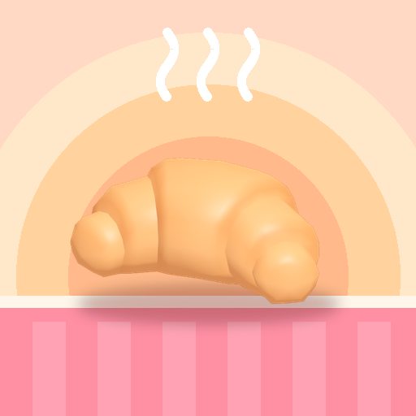

<- all projects

Dawn Bakery
PC
Volume
Live
Plan the morning menu, fire the ovens and bake for a whole seaside town.
Aunt Odile left you her bakery in Saltmere, a cold oven and a recipe book with half its pages torn out. Every morning the Dawn Forecast shows who is coming: fishermen, school kids, tourists and the café crowd, each loving different breads, pastries, sweets, pies and cakes. Pick a menu that matches the crowd, then move dough through Mixer, Oven and Counter and fix the slow station. Over 6 chapters of big orders, from a harbour wedding to a rival baker with a secret, restore the book and unlock 12 bakes. Then open bakeries in new towns.